גלריה היסטורית
תמונות המגלים והגילויים
גלריה חזותית המרכזת את דיוקנאות המגלים ואת האיורים ההיסטוריים/מדעיים של הגילויים המרכזיים באתר.
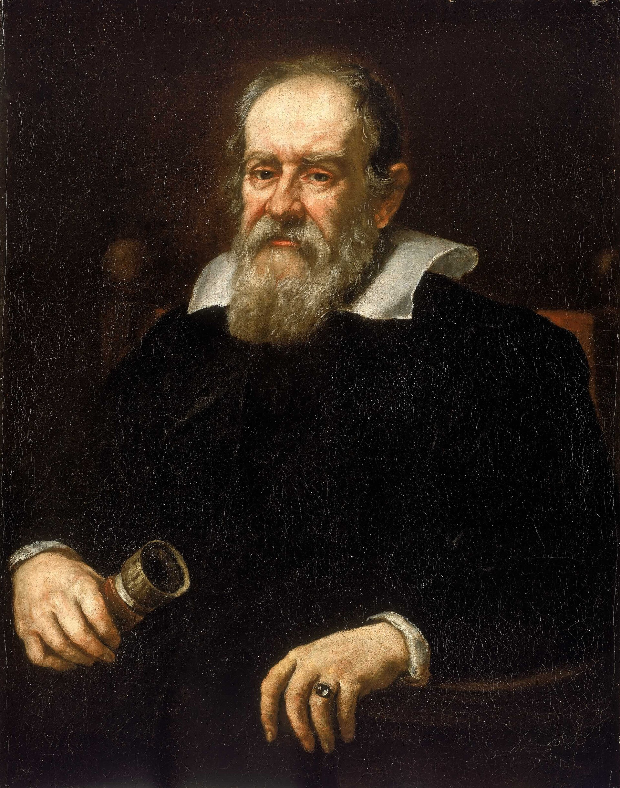
גלילאו גלילייתצפית, טלסקופ והערעור על המודל הגאוצנטרי.
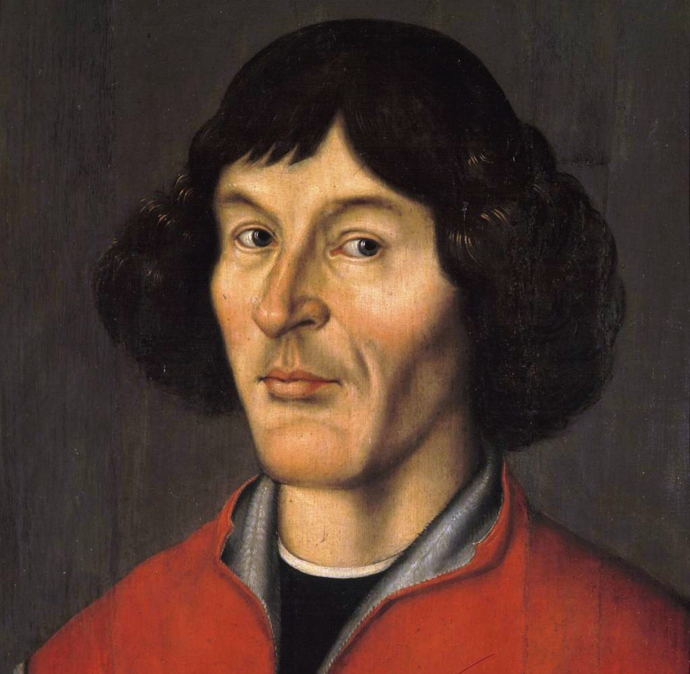
ניקולאוס קופרניקוסהמודל ההליוצנטרי והזזת מרכז היקום מן הארץ אל השמש.
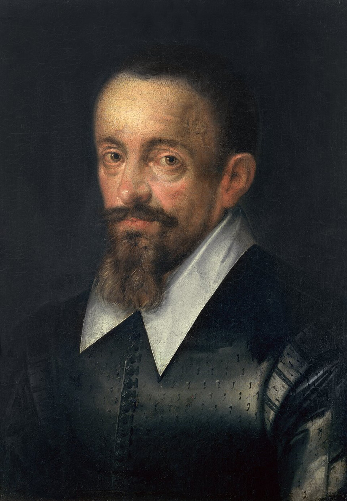
יוהאנס קפלרחוקי תנועת הפלנטות והמסלולים האליפטיים.
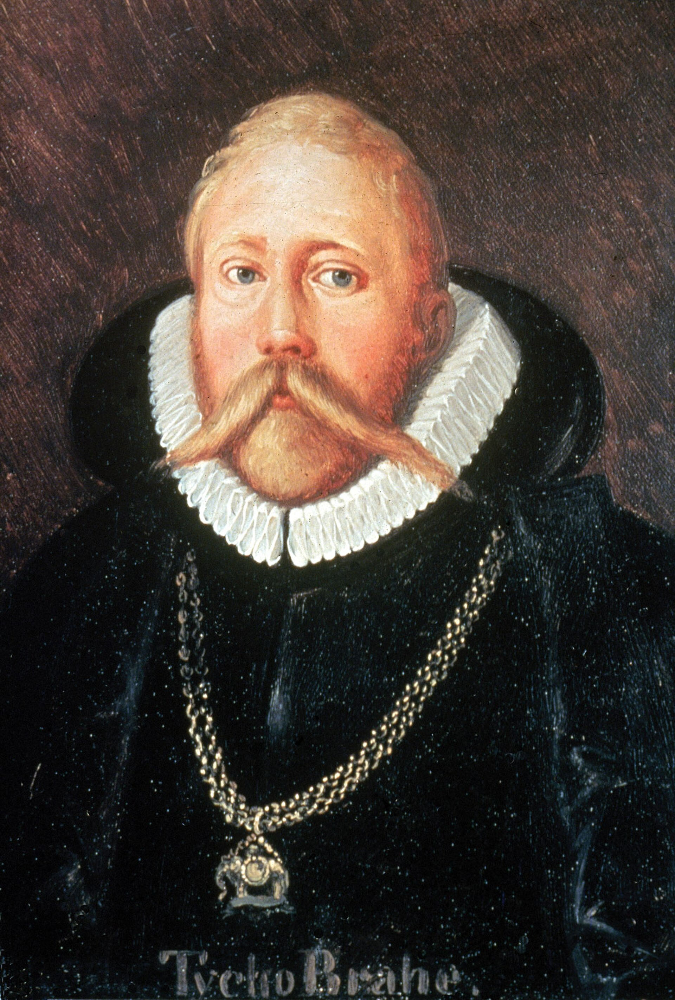
טיכו ברההמדידות מדויקות, סופרנובה ושביט בעידן שלפני הטלסקופ.
פרנסיס בייקוןניסוי, תצפית, אינדוקציה וזהירות מהטיות.
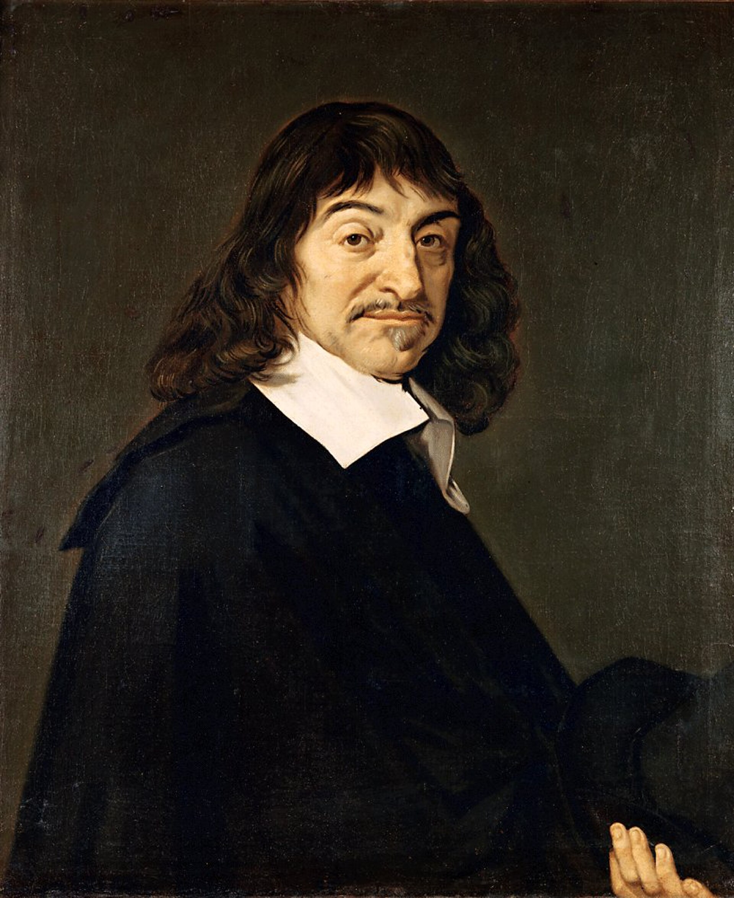
רנה דקארטהגאומטריה האנליטית, מערכת הצירים והמתודה.
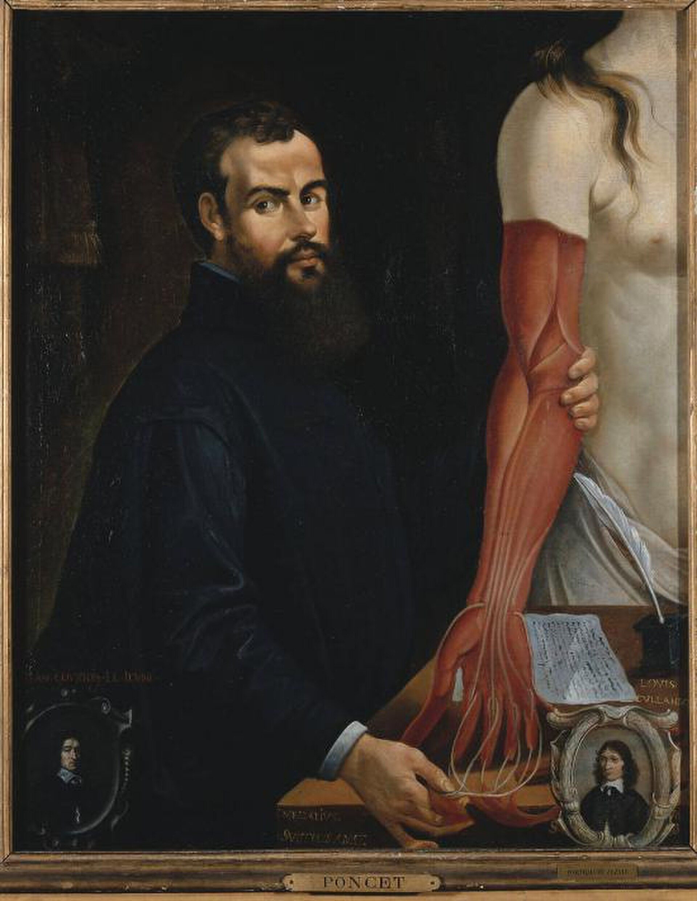
אנדראס וסאליוסאנטומיה מודרנית, נתיחה ותצפית ישירה בגוף האדם.
גילויים ורעיונות
הדימויים המדעיים
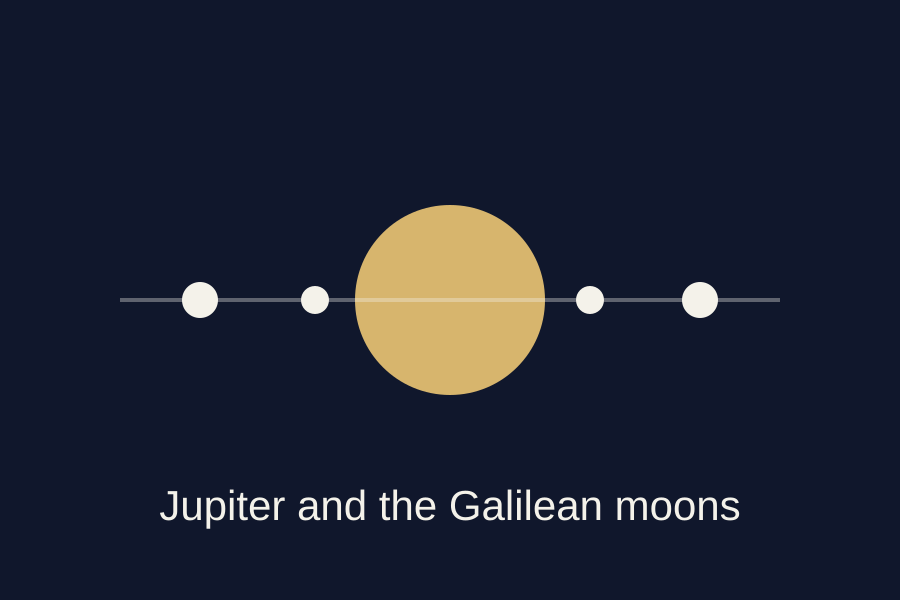
ירחי צדקתצפית שהראתה שלא כל גוף שמימי מקיף את כדור הארץ.
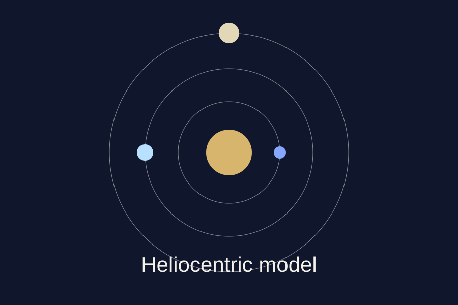
המודל ההליוצנטריהשמש כמרכז מערכת הפלנטות במקום הארץ.
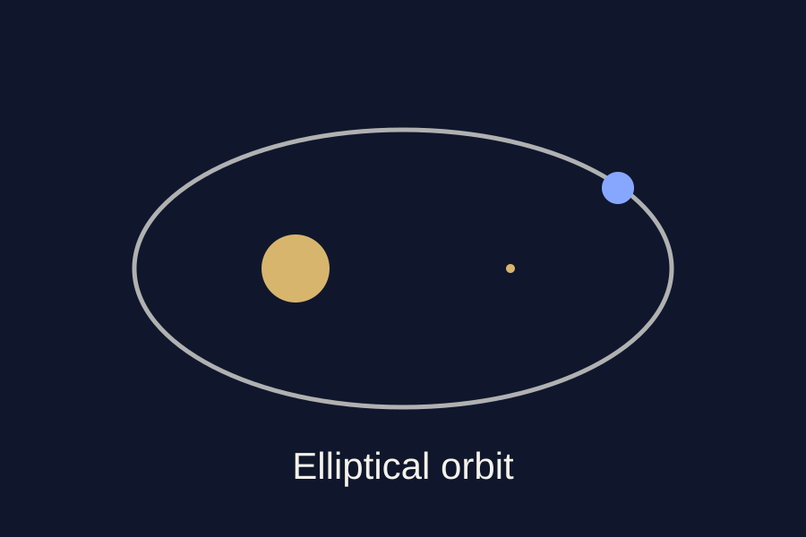
מסלול אליפטיהוויתור על המעגל המושלם לטובת מדידה מדויקת.
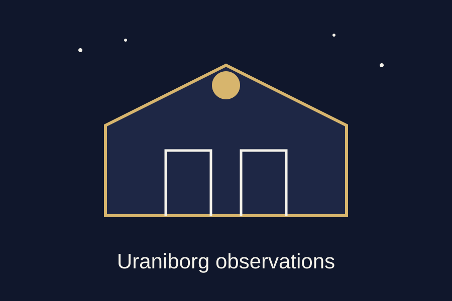
מצפה אורניבורגהמדע כתשתית של מדידות, מכשירים וארגון ידע.
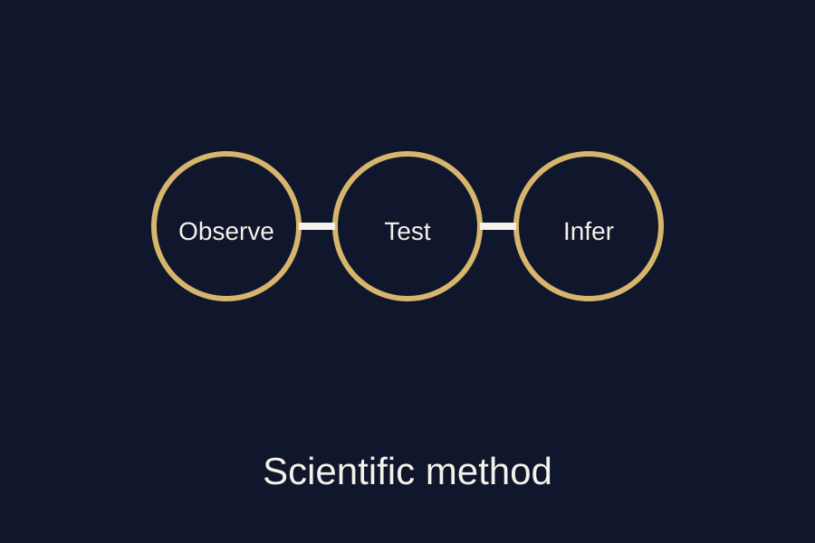
השיטה המדעיתתצפית, ניסוי, אינדוקציה וביקורת הטיות.
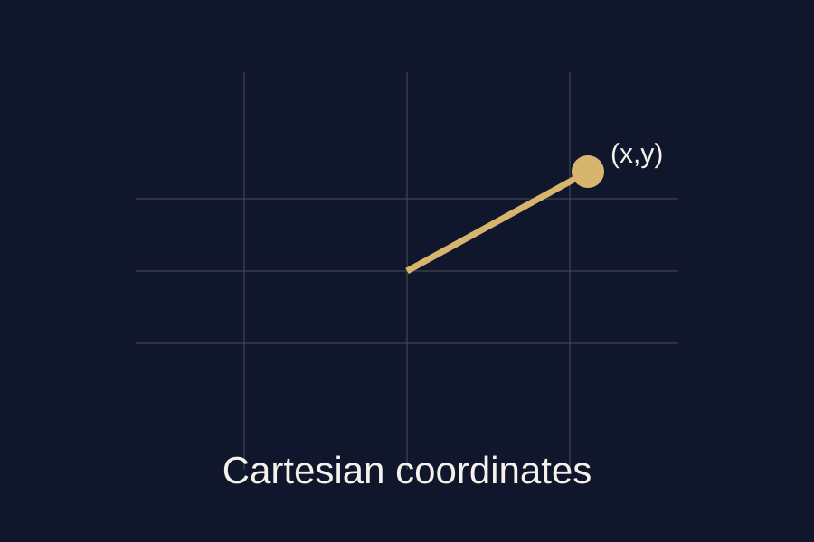
מערכת ציריםחיבור בין גאומטריה לאלגברה באמצעות קואורדינטות.
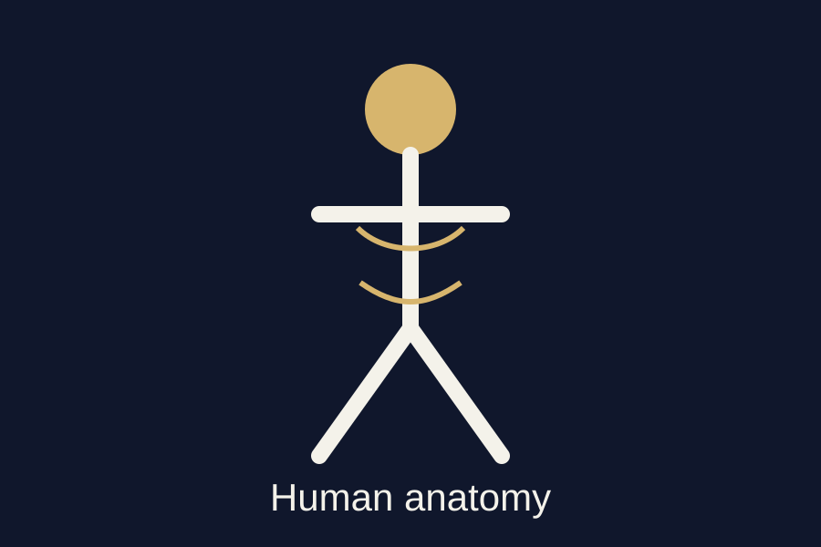
אנטומיה חזותיתגוף האדם כמקור ידע ישיר ולא רק כסמכות טקסטואלית.